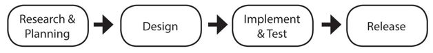

Functions of a PM
The day-to-day work of a product manager varies over the course of the product life cycle. At the beginning, you’ll be figuring out what to build; in the middle you’ll help the team make progress; at the end you’ll be preparing for the launch.

While the product life cycle varies by company (and sometimes even by team), it usually follows a general pattern of Research & Plan, Design, Implement & Test, and Release. Of course, these frequently overlap and feed back into each other.
Some companies or teams split the product manager role across two people: the more business-focused person and the more engineering-focused person. When companies make this split, they call the engineering-focused person the technical program manager or technical product manager (TPM), and they call the business-focused person the product manager (PM).
When a team has a TPM and a PM, the product manager focuses on Research & Planning and Release, while the technical product manager is more focused on Design and Implement & Test. For example, the product manager will research the market and define the requirements. The TPM will work with the PM to translate those requirements into the specific feature work required, and then facilitate the engineering team as they build it.
Research & Planning
All products and features start with research and planning. This is the time when the PM is starting to think about what to build next. The next idea may come from a customer request, competitive analysis, new technology, user research, the sales or marketing teams, brainstorming, or the big vision for the product.
Depending on the scope of the role, a big part of the product manager’s job in this phase is creating or proposing a roadmap. This means figuring out a cohesive long-term plan for the team. The PM talks to all possible sources to create a large list of potential features or development work. Then, based on factors like customer needs, the competitive landscape, business needs, and the team’s expertise, he prioritizes the features and scenarios.
Once the PM has a proposed roadmap, he needs to bring other people on board. Some companies, such as Microsoft, Apple, and Amazon, have a top-down approval process, where executives and directors get involved very early. Other companies, such as Google, Facebook, and many startups, have a more bottom-up approach, where the PM focuses on winning over the engineers.
Once he’s chosen a feature set, the product manager becomes the expert on them. He’ll think deeply about the problems he’s trying to solve and the goals of the features. In the coming phases, everyone on the team will have questions, including “why are we working on this?”, and the PM will need to have answers.
This is also the time when the PM starts defining success. He’ll envision what the world looks like if the team is successful. Many companies use the model of Objectives and Key Results (OKRs) to communicate the most important goals of the team. In this model, the PM works with the team to come up with measurable results that it can commit to.
Design
Once the PM has formed agreement on what the team is going to build, it’s time to design the product and features.
Product design does not just mean user interface (UI) design or drawing out what the product will look like. Product design is defining the features and functionality of the product. The PM’s role in product design varies substantially between companies and teams.
On some teams, especially shipped software (as opposed to online software) teams at Microsoft, the PM will write out a detailed functional specification (spec) that includes things like:
The spec will then spend weeks being inspected, reviewed, and iterated on by developers, testers, and other PMs. On these teams, the PM is expected to make every user-facing decision.
Other teams have much looser specs and a more rapid design process. The PM might sit down with an interaction designer, chat about the goals, brainstorm on a whiteboard, and then iterate by giving feedback on the designer’s mock-ups. When the mocks are ready, the PM might send them to the engineers with just a few sentences in an email. On these teams, the engineers will generally make easy product decisions as they come up and call the PM over to ask about the more difficult ones.
And for some teams, especially at Apple, the design is done mostly by a dedicated design team with minimal input from the PM. On those teams, the PM might focus more on project management and fighting fires as they come up.
Since the product manager’s role in product design can vary so much across teams, it’s a great thing to ask about during your interview. Ask about who you’ll be working with on your core and extended team. Find out how much of your time will be spent writing specs and how much you’ll be working with designers. Learn where the balance is between PMs, designers, and engineers in making product decisions.
Implement & Test
A PM’s work isn’t done once engineers start coding. During the implementation stage, the product manager keeps track of how the project is going and makes adjustments.
During implementation, one of the most important parts of the job is helping the engineers work efficiently. The product manager will check in regularly with his team and learn how things are going.
Often an engineer will be blocked because she’s waiting for work from another team. In this case, the PM will need to find other tasks for the engineer and, in the meantime, work with the other team to get the work finished more promptly.
Sometimes, implementation of a feature will turn out to be harder than anticipated, and the PM will look for ways to change the feature to make it easier to implement. If an engineer is running behind schedule, the product manager can review the scheduled work carefully and cut lower priority work.
During implementation, the product manager will also start gathering feedback and reporting bugs on the early versions of the product. Sometimes, a feature that looked good during the design phase will not work as well as expected once it’s used in the real world. To find problems like this, teams will do usability studies, run experiments, and do internal “dogfooding.”
Dogfooding comes from the term “Eat your own dogfood,” and simply means using your own product yourself. For example, people at Microsoft run early versions of the next Windows release on their computers every day. Facebook employees use Facebook Groups to communicate.
Sometimes teams need to be more creative to find ways to use their own products. For example, Google gives employees an AdWords budget and encourages people to create advertising campaigns to make sure they get enough dogfooding.
Another way to find out if a product will work before it’s launched is through usability studies. In a usability study, participants try out early prototypes of a new product or feature. Usually the participants are given a scenario or goal, and then they’ll try to use the prototype to accomplish the goal.
Larger companies usually have a user researcher, who develops and runs the study with some input from the product manager. At smaller companies, the PM might run the studies. In both cases, by watching a handful of studies, PMs can see where people struggle and identify key usability issues.
While dogfooding and usability studies are great for getting qualitative feedback, running experiments is a way to get quantitative feedback when you have online software. In an experiment, the new feature is turned on for a percentage of users (the experiment group), while the rest of users (the control group) keep using the product without the new feature. For online software, it’s common for all new features to be launched gradually as an experiment.
In an experiment, you can measure specific metrics for the new feature, such as how many people click a new button you added, as well as overall success metrics like user engagement, retention, and revenue. By comparing the success metrics between the experiment and control groups, you can tell how successful the new feature is.
As feedback comes in through dogfooding, usability studies, and experiments, the PM identifies the most important issues and iterates on the feature design to find better solutions. Prioritization is one of the product manager’s most important functions at this point; if the team were to fix every bug and build every new feature idea, the product would never launch. The PM needs to consider all of the new requests and decide if they should be prioritized for the current release or punted to a later time.
Release
When the development process is finished, the product manager needs to make sure the launch goes smoothly. The launch process varies from team to team but usually involves things like:
After a successful launch, the PM usually announces the launch to the rest of the company, celebrates with the team, and then prepares to do it all over again. Depending on the team, the PM might continue to support the product after the launch, gathering metrics and iterating on user feedback, or the product might be handed over to another team for operations and maintenance.
How the type of product affects the PM job
The actual work a product manager does can depend a lot on what the product is. Software that ships on a DVD or in an app store is very different from online software that can be updated at any time. Additionally, being a PM on a mature product might be very different from being a PM on a new product.
Shipped Software
Shipped software refers to products like mobile apps that ship in the Apple App Store or software that ships on DVDs. Shipped software is unique because it’s hard to update after launching. With a web app, you can always release a new feature and quickly roll it back if there are issues. With shipped software, it’s important to get it right the first time.
As a result, shipped-software teams tend to have longer timelines, and the products require more project management and coordination between teams. Specs are more important because features are more formal and need to serve more audiences. User research and internal dogfooding (using early builds of the software) are also very important since you need to know if the product is good before it’s released.
PMs who are good at project management and have good communication skills do well working on shipped software. Shipped software can also be great for people who want a good work/life balance, since there aren’t usually urgent issues that need to be fixed within hours.
Online Software
In online software, being scrappy is very important. Product updates are relatively easy, so things tend to move quickly. Instead of waiting for the product to be perfect, teams will often launch something, see how it does, and launch again.
Most online-software teams run A/B tests (also called multivariate testing or online experiments). In an A/B test, a new feature is released to a percentage of users. The behaviors of the experiment and control group are later compared to see if the new feature improves the experience.
Because companies in online software collect more data, it’s important that these PMs are skilled with data analysis and designing experiments. It’s also important to work well under pressure, as servers can fail at any time and PMs often have to make quick decisions.
Consumer Products
In consumer products like social networks, photo sharing apps, and web search, the customers are regular everyday people, just like you, your grandmother, and the engineers. The good thing about working on consumer products is that everyone understands the target customer and use cases. Unfortunately, that’s also the bad thing.
On a consumer facing product, the engineers will often have lots of product ideas and won’t rely as much on the product manager to come up with features and design. PMs can often act like shepherds and editors, guiding the product to a good endpoint, rather than being the person who makes all the decisions.
Data-driven PMs can do very well working on consumer products because they’re able to make a strong case for their proposals, and they often can come up with features that will make a difference to the core metrics the company cares about. Consumer products are also great for people who want to be able to explain what they do to their parents!
B2B Products
In business-to-business (B2B) products like online ads or productivity software, the customer works at another company. For these products, engineers realize that they’re not the target audience and tend to rely more on the product manager to understand the customer.
Depending on the team, sometimes PMs on B2B products are responsible for thinking about how product decisions will affect revenue. They’ll need to balance features that match their long-term strategy against features that current big customers are clamoring for.
PMs who like doing customer research and market analysis could enjoy working on B2B products. These are also the products where PMs tend to exert the most influence, so they can be a very satisfying place to work.
Early Stage Products
With newer products, such as those about to launch or recently launched, the team is often focused on shipping a minimum viable product (MVP). This is not the time to tackle all challenges, since you don’t even know if the product is a good fit in the market and for customers. Instead, you want to answer questions and prove your core value as quickly as possible.
PMs focus on cutting non-essential features to strip the product down to just the essentials. This allows them to launch faster and to begin the process of learning what customers really want (or if they want the product at all). Sometimes, this means launching products that aren’t as polished as you would like.
PMs who like excitement and are comfortable with doing things the quick and dirty way do well on early stage products. For PMs on early stage startups, the most exciting thing can be taking a product from a tiny user base to a much larger one.
Mature Products
For mature products, such as market leaders, most of the work will be iterating on the product and trying to improve it. PMs often have feedback from previous versions as to which areas need the most improvement and can focus on them.
As a PM on a mature product, it can be very important to make sure you don’t get stuck making small incremental improvements. Often, a mature product’s biggest competitor is the last version of that same product. At the same time, mature products often have the luxury of time to make big bets on new ideas.
One of the biggest advantages of working on a mature product is that you already have a huge user base. Every improvement you make will be multiplied to make a very big impact. On the other hand, many companies with mature products become risk averse and won’t make daring changes.
PMs who want to work on products used by millions of people would enjoy working on mature products. Mature products are also a great place to learn from the people who were able to make the product succeed.